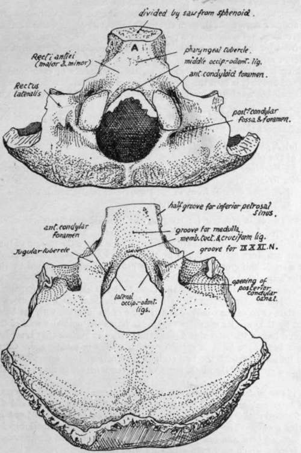
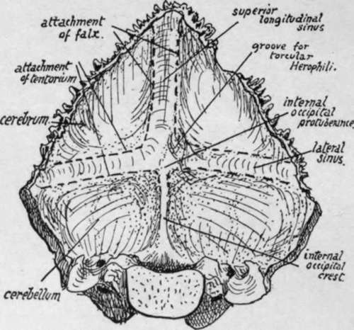
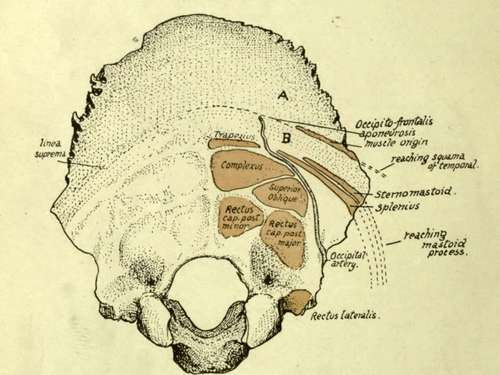

Occipital
Description
This section is from the book "The Anatomy Of The Human Skeleton", by J. Ernest Frazer. Also available from Amazon: The anatomy of the human skeleton.
Occipital
A tabular bone situated in the lower and back part of the skull and resting on the atlas, so that its cerebral surface is markedly concave and its superficial surface convex. It is divisible, as we have seen, into parts grouped round the foramen magnum.
Seen from below, the foramen magnum is oval in shape, but its outline is encroached upon (Fig. 169) in its front half by the inner margins of the articular condyles ; otherwise the margin is thin, giving attachment to anterior and posterior occipito-atloid ligaments and to the capsule on each side of the condylar projection.
Fig. 169.-Occipital bone. A,, basi-occiput in relation with roof of naso-pharynx.
There is often a small bony point in the middle line on the front margin, that marks the attachment of the middle occipito-odontoid ligament.
The condyles, convex from before backwards but twisted on their long axis, look on the whole downwards and backwards and outwards ; each is raised from the surface on a block of bone traversed by the anterior condylar canal, the lower opening of which is above the antero-lateral margin of the condyle. A posterior condylar fossa and foramen (not always present) are placed behind the condyle.
The long axes of the condyles form an angle of 65 degrees with each other ; they permit a nodding movement through an angle of about 45 degrees, and a certain amount of lateral rocking, but no rotation is possible (see p. 18). Very rarely there is an articulation in front for the atlas or odontoid ; the only condyle present in birds and reptiles is an anterior median one.
Looking into the foramen from above, the prominence of each condyle is more striking, and above it is seen the upper opening of the anterior condylar canal: below this is a small bony tubercle marking the attachment of the lateral occipito-odontoid ligament.
Basi-occiput: in front of the foramen, a thick, short, rod-like piece of bone. Lower aspect shows :-
(a) A pharyngeal tubercle for the attachment of the mid-point of the posterior wall of the pharynx.
(b) Markings behind and on each side of the tubercle for insertion of the anterior Recti.
(c) A small area in front of the tubercle in relation with mucous membrane and pharyngeal tonsil (A. in Fig. 169).
Upper aspect is grooved for reception of medulla and vertebral arteries, these being supported by a cushion of subarachnoid fluid. Deep to these the cruciform ligament and membrana tectoria are attached a little above the margin of the foramen, where their markings may be found by the finger. Along each lateral border of this aspect is a small half-groove for the inferior petrosal sinus, completed by the petrous bone in the articulated skull.
The exoccipital is that part of the bone that lies outside the foramen magnum and forms all its margins except the extreme front and back parts ; it carries the hinder three-quarters or so of the condyle, and the line of its junction with the basi-occipital is marked by the anterior condylar canal. It forms the posterior wall of the jugular foramen and has on its outer side a roughened articular surface that is separated from the petrous bone by a layer of cartilage which ossifies in middle age. On the upper aspect of its junction with the basi-occiput is seen (Fig. 169) a jugular tubercle and, behind this, a groove for the ninth, tenth and eleventh nerves as they run to the jugular foramen.
The upper surface of the exoccipital has a prominent hooked process standing up at its outer end, and round this the deeply-cut groove for the sigmoid sinus turns sharply forward : the " posterior condylar canal " opens into the front and lower part of this groove. The lower surface (Fig. 169) shows rough markings for Rectus lateralis inserted here, and one of these ridges may be produced downwards as a par-occipital process, which may even articulate with the atlas.
Now articulate the bone with the temporal and look at the jugular foramen between them ; it has a larger part externally for the vein and a small inner part for nerves, and these two parts are often separated in part or wholly by a small bony projection from the occipital above the anterior condylar foramen, called the " intra-jugular process".
The tabular or squamous part can be said to consist of a post- or infra- occipital and a supraoccipital portion : looking at the complete skull it can be seen that the part immediately behind the foramen magnum looks down towards the neck and is marked by nuchal attachments, while the part above and behind this looks backwards and lies under the scalp ; the latter is the (membranous) snpraoccipital and is between the parietals,* and the former is the (cartilaginous) post-occipital and abuts on the petro-mastoid laterally. The borders of the squamous part show the distinction, for those on the supraoccipital are strongly serrated, but those on the post-occipital are not serrated at all.
Fig. 170.-Cerebral aspect of occipital bone.
Fig. 171.-Attachments, etc., on occipital. J, covered by Occipito-frontalis; B, subcutaneous area crossed by artery and nerve.
The cerebral surface (Fig. 170) has (a) The internal occipital protuberance, with the internal occipital crest running down from it to the margin of the foramen magnum : the crest is sometimes replaced by a groove, containing the occipital sinus. (b) Grooves running out transversely for the lateral sinuses, (c) A groove ascending from the tuberosity for the superior longitudinal sinus, usually to the right of the middle line and continuous with the right lateral groove : the left lateral groove appears to start at the tuberosity, because the left sinus is generally continuous with the straight sinus, which is in the tentorium cerebelh. The junction between left and right systems is usually small and lies on the protuberance, but occasionally makes a groove on the bone, as in that figured ; it is called the torcular Herophili.
Continue to:
- prev: Parietal
- Table of Contents
- next: Occipital. Continued